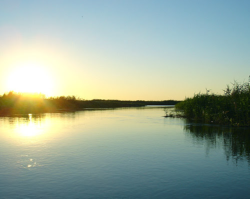

Жаркий, сухой и контрастный
Астрахань расположена в зоне резко континентального климата с влиянием засушливых степей и близости Каспийского моря.
Рекордная жара летом
Средняя температура июля: +25-+27°C, но часто достигает +35-+40°C.
Абсолютный максимум: +45°C (один из самых жарких городов России).
Мало дождей – летом бывают пыльные бури из-за суховеев.
Короткая и мягкая зима
Средняя температура января: −7°C, но бывают морозы до −20°C.
Снега мало, часто тает – устойчивый снежный покров бывает редко.
Иногда случаются ледяные дожди из-за колебаний температур.
Солнечно и сухо
Осадков всего 200–250 мм в год (меньше, чем в пустынях!).
Солнечных дней – более 220 в году (как в Крыму).
Резкие перепады температур
Весной и осенью возможны скачки от +20°C днем до 0°C ночью.
Сильные ветра – особенно весной (до 15–20 м/с).
Среднемесячные температуры
| Месяц | Температура (°C) | Осадки (мм) |
|---|---|---|
| Январь | -5.5 | 16 |
| Февраль | -4.7 | 14 |
| Март | +1.2 | 18 |
| Апрель | +10.5 | 20 |
| Май | +18.3 | 25 |
| Июнь | +23.5 | 22 |
| Июль | +26.1 | 18 |
| Август | +24.8 | 16 |
| Сентябрь | +18.2 | 18 |
| Октябрь | +9.8 | 20 |
| Ноябрь | +2.1 | 19 |
| Декабрь | -2.8 | 18 |
Почему такой климат?
- Удаленность от океанов – нет смягчающего влияния
- Равнинная местность – воздух быстро нагревается и остывает
- Близость пустынь (Калмыкия, Казахстан) – приносит сухие ветра
- Влияние Каспийского моря – умеряет зимние холода, но недостаточно для увлажнения
- Антициклоны – частое явление, особенно летом